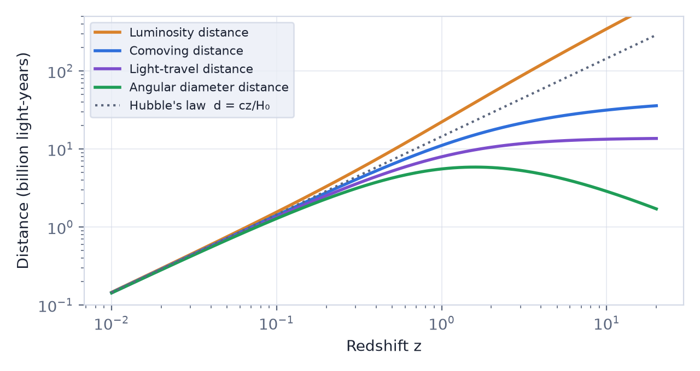
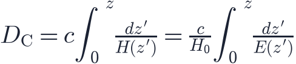
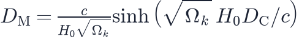
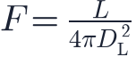
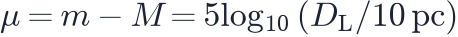
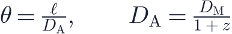
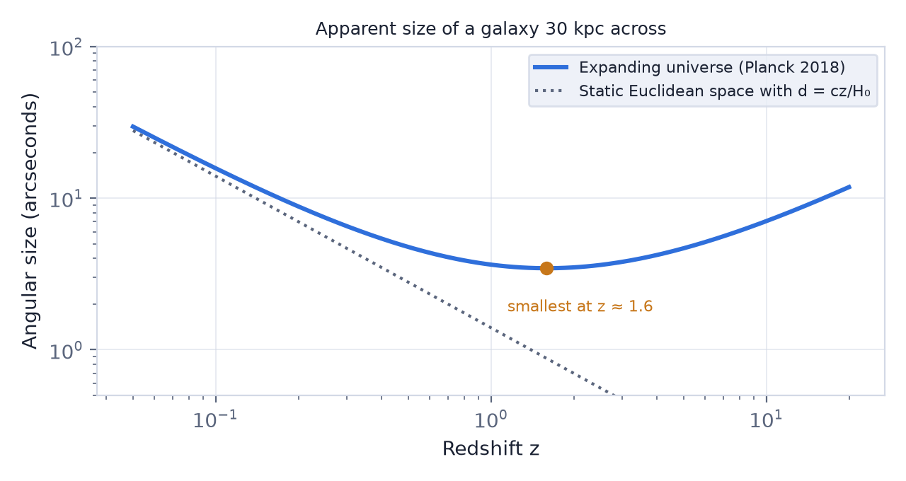
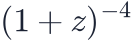

In this lesson you will learn
|
"How far?" has many answers
Suppose we see a galaxy at redshift  . How far away is it?
. How far away is it?
- When the light left, the galaxy was relatively close.
- While the light travelled, space expanded.
- Today the galaxy is much farther away than when it emitted the light.
There is no single "distance" in an expanding universe. Instead, cosmologists define several distances, each tied to a specific way of measuring. At small redshift they all agree with Hubble's law, . At large redshift they differ enormously.

Comoving distance
The comoving distance is the distance on the expanding grid, equal to the proper distance today (lesson L2.1). Light covers a comoving distance for each small step in redshift, so

with from lesson L2.4. The proper distance at the time of emission was smaller by the scale factor: .
Curved space In curved space, the distance that matters for sizes and brightnesses is the transverse comoving distance . For flat space . For open space  , and for closed space the sine replaces the hyperbolic sine (lesson L2.5). Our universe is flat, so we will not distinguish them below. |
Light-travel distance
The light-travel distance is simply the speed of light multiplied by the lookback time:
It is what news reports usually mean by "a galaxy 13 billion light-years away". It is useful as a statement about time (the light is 13 billion years old), but it is not the distance to the object at any single moment.
Luminosity distance
Astronomers often measure distances with standard candles: compare the known
luminosity  with the observed flux
with the observed flux  . The
luminosity distance is defined so that the familiar
inverse-square law still holds:
. The
luminosity distance is defined so that the familiar
inverse-square law still holds:

In an expanding universe it is
Two extra factors of (1 + z) Three effects dim a distant source:
Together the flux falls by |
The distance modulus

used with supernovae (lesson L3.3) is based on .Angular diameter distance
Another way to find a distance is to compare an object's true size  with the
angle
with the
angle  it covers on the sky. The
angular diameter distance is defined so that
it covers on the sky. The
angular diameter distance is defined so that

It is the proper distance of the object when the light left it, in a flat universe.
Something remarkable follows. grows with redshift at first, reaches a maximum of about 5.9 billion light-years at , and then decreases.

Farther galaxies can look bigger Beyond , a galaxy of fixed size appears larger on the sky the farther away it is. The reason: we see it as it was when the universe was much smaller, so it was physically close to us when it emitted the light we receive. The CMB's last scattering surface, the most distant thing we see, has an angular diameter distance of only about 40 million light-years. |
Distances at a glance
Planck 2018 values, in billions of light-years:
| Redshift | Comoving (today) | At emission | Light-travel | Luminosity | Angular diameter |
|---|---|---|---|---|---|
| 0.1 | 1.41 | 1.28 | 1.35 | 1.55 | 1.28 |
| 0.5 | 6.35 | 4.23 | 5.20 | 9.53 | 4.23 |
| 1 | 11.1 | 5.54 | 7.94 | 22.2 | 5.54 |
| 3 | 21.2 | 5.31 | 11.7 | 85.0 | 5.31 |
| 1090 (CMB) | 45.4 | 0.04 | 13.8 | 49 500 | 0.04 |
Which distance should I use?
|
Two useful relations
The luminosity and angular diameter distances are tied together by the Etherington relation, valid in any expanding universe where photons are conserved:
A consequence is surface brightness dimming: the brightness per unit area on the sky of a galaxy falls as

, independent of cosmology. Observations of this Tolman test agree with an expanding universe, once the evolution of galaxies is taken into account, and rule out simple "tired light" models of a static universe.Try it: Cosmology Calculator Choose any redshift and check that the luminosity distance equals (1 + z)² times the angular diameter distance. Then find where the angular diameter distance is largest. |
Remember this
|